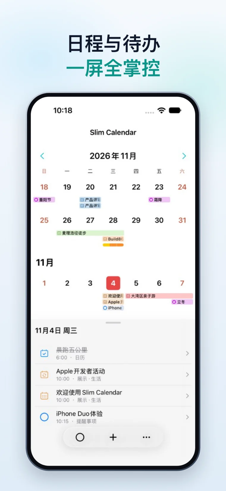
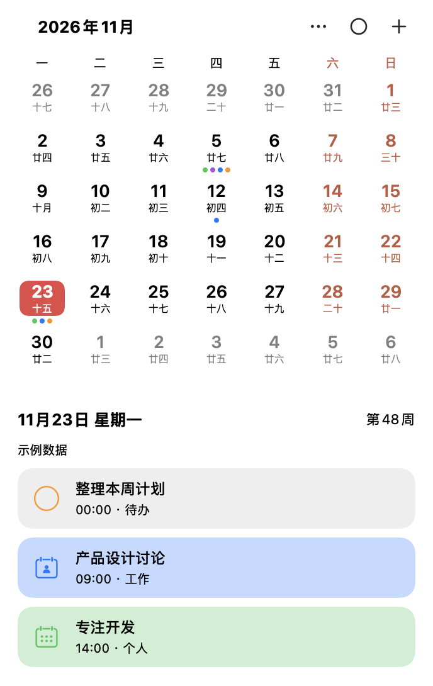

一个视野，放下两份清单
连接系统日历与提醒事项，将日程和待办融合展示，按来源色彩轻松辨认。
日历 · 日程 · 待办
把一天的安排，
放在一个清晰的视野里。
在 iPhone 上随手记录，在 Mac 菜单栏轻轻一瞥。
工作、生活与留给自己的时间，都各得其所。
Mac 1.0 · Apple Silicon 查看安装说明


安排清楚，心里轻松
会议、散步、一本想读的书。
不用反复切换清单，看见今天该做什么，
也看见那些值得期待的事。
连接系统日历与提醒事项，将日程和待办融合展示，按来源色彩轻松辨认。
从月历看安排的分布，选一天看具体事项。农历、节日与调休标记也在身边。
支持浅色与深色外观，以及简体中文、繁體中文和 English。
日程与待办，一屏全掌控。
App Store 最新预览素材
SLIM CALENDAR FOR MAC
日历住进菜单栏，少一次窗口切换。
从当月安排到当日待办，一次点击就看见。
当前实机验证：macOS 27
解压 ZIP，将 Slim Calendar Mac 拖入「应用程序」。启动后点击菜单栏图标，按需授予日历与提醒事项权限。
版本：1.0（Build 20），2026 年 11 月 23 日。仅支持 Apple Silicon；Intel Mac 暂无此安装包。
SUPPORT
使用中遇到问题，欢迎通过邮件联系。
onedolphindeveloper@gmail.com